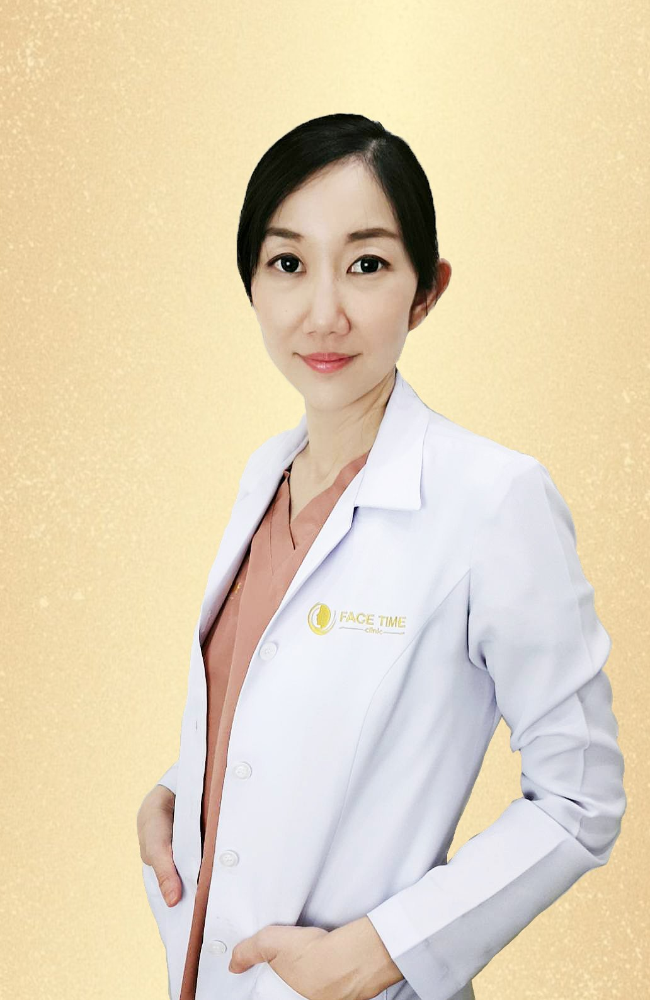
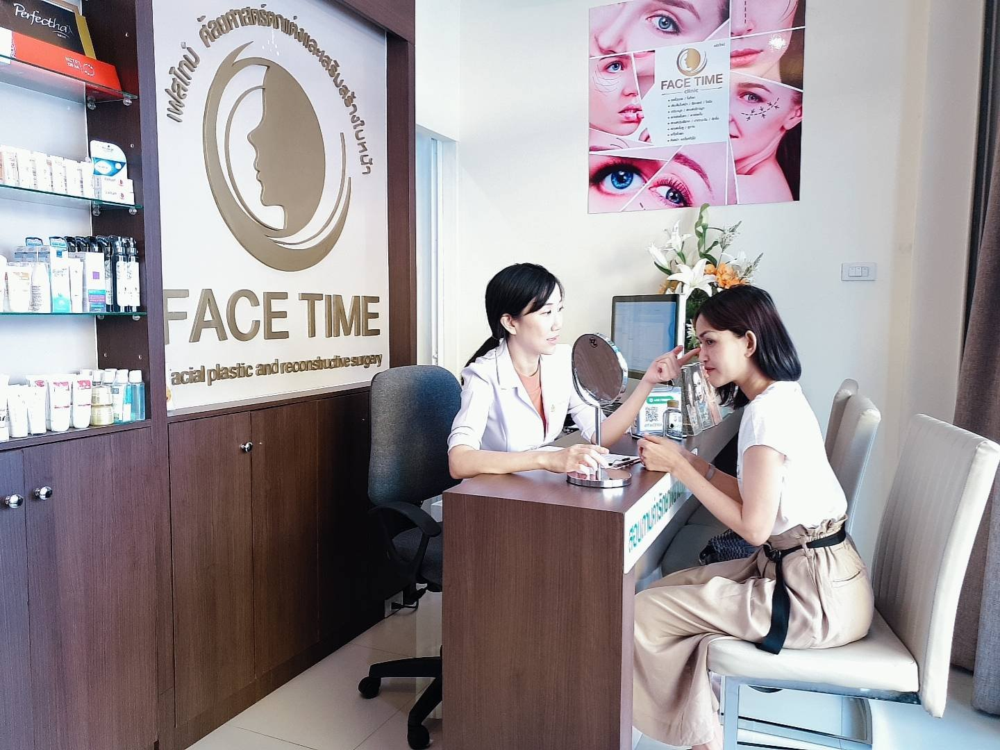
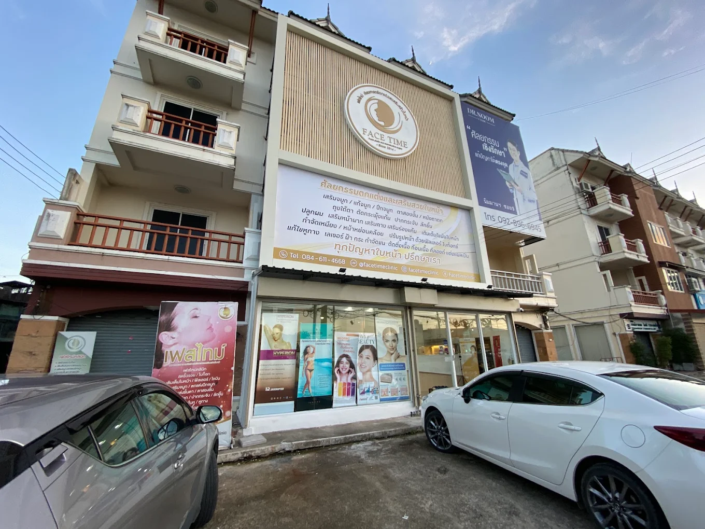

Meet the Doctor
พญ. วรยา ขัตติพัฒนาพงษ์ (หมอเหมียว)Woraya Khattipattanapong, MD.
แพทย์ผู้เชี่ยวชาญด้านโสต ศอ นาสิกวิทยา และอนุสาขาศัลยศาสตร์ตกแต่งและเสริมสร้างใบหน้า

Doctor Profile
แพทย์เฉพาะทาง
ศัลยกรรมตกแต่งและเสริมสร้างใบหน้า
เป็นผู้ประกอบวิชาชีพเวชกรรมตั้งแต่ พ.ศ. 2550
Permission to Practice Medicine since 2007
สาขา โสต ศอ นาสิกวิทยา (Otolaryngology)
ศัลยศาสตร์ตกแต่งและเสริมสร้างใบหน้า (Facial Plastic and Reconstructive Surgery)
Education & Training
ประวัติการศึกษาและความเชี่ยวชาญ
Medical Doctor, Faculty of Medicine Chiang Mai University
Diploma of Otolaryngology, Faculty of Medicine Chiang Mai University
Certificate Dermaster Korea, 3D UVL Basic Facial Training
Diploma of Facial Plastic and Reconstructive Surgery, Faculty of Medicine Chulalongkorn University
Certificate of International Visiting Scholars Training Program at Department of Otolaryngology, Asan Medical Center, Seoul, Korea
Certificate of Attendance 88th Annual Congress of Korean Society of Otolaryngology
Certificate of Attendance International course of Masterclass Blepharoplasty
Certificate of Attendance Thai Association and Academy of Cosmetic Surgery and Medicine
Certificate of Participation in 16th ASEAN ORL-HNS Congress
Certificate of Participation of Korean College of Cosmetic Surgery
Certificate of Attendance 8th Facial Plastic Surgery Conference

About Dr. Woraya
ประสบการณ์และแนวทางการดูแล
แบบเคสต่อเคส
แพทย์หญิงวรยา ขัตติพัฒนาพงษ์ (หมอเหมียว) จบการศึกษาแพทย์ศาสตร์บัณฑิต มหาวิทยาลัยเชียงใหม่ (เกียรตินิยม) จากนั้นจึงศึกษาต่อแพทย์เฉพาะทางด้านโสต (หู) ศอ (คอ) นาสิก (จมูก) ที่มหาวิทยาลัยเชียงใหม่ แล้วไปศึกษาต่อแพทย์เฉพาะทางศัลยกรรมตกแต่งและเสริมสร้างใบหน้า (Facial Plastic and Reconstructive) ที่จุฬาลงกรณ์มหาวิทยาลัย ระหว่างเรียนมีโอกาสได้ไปดูงานกับศัลยแพทย์ชื่อดังในประเทศเกาหลี ไต้หวันและสิงคโปร์ ผ่านการฝึกอบรมและมีประสบการณ์ทำงานด้านศัลกรรมเสริมความงามกว่า 13 ปี
สาเหตุที่หมอเหมียวเลือกเรียนสาขาศัลยกรรมตกแต่งและเสริมสร้างใบหน้า เพราะเล็งเห็นประโยชน์ที่ลูกค้าจะได้รับหลังการผ่าตัดอย่างชัดเจน ไม่ว่าจะเป็นด้านคอสเมติก (ศัลยกรรมตกแต่ง) หรือรีคอนสตรัคทีฟ (Reconstructive - การเสริมสร้างใบหน้า) หมอจะรู้สึกเหมือนอมยิ้มในใจทุกครั้งที่ลูกค้าลุกขึ้นจากเตียง แล้วส่องกระจกชื่นชมกับภาพลักษณ์ที่เปลี่ยนไปของตัวเอง
อ่านต่อ
ก่อนทำการผ่าตัดหรือรับบริการเสริมสร้างใบหน้าที่ FaceTime Clinic หมอเหมียวจะมีการพูดคุยประเมินถึงต้องการของลูกค้าและความเป็นไปได้ต่างๆ เพื่อให้ลูกค้าได้ข้อมูลที่ครบถ้วนแท้จริงอย่างตรงไปตรงมา และใช้ประกอบการตัดสินใจเพื่อออกแบบความงามให้เข้ากับแต่ละคน แต่ละใบหน้า แบบเคสต่อเคส เนื่องจากโครงสร้างใบหน้าของแต่ละคนไม่เหมือนกันไปหมดทุกอย่างแม้กระทั่งฝาแฝดเอง ความละเอียดเอาใจใส่แบบเคสต่อเคส จึงเป็นสิ่งที่หมอเหมียวอยากให้ลูกค้าทุกคนได้รับจากเฟสไทม์คลินิกค่ะ
Our Promise
ดูแลลูกค้าทุกคน
เหมือนคนในครอบครัว
ดูแลดุจญาติมิตรพร้อมดวงจิตบริการ
คนที่เรียนจบจากคณะแพทยศาสตร์ มช. คงคุ้นหูกับคำขวัญนี้เป็นอย่างดี สิ่งนี้ปลูกฝังให้หมอเหมียวตั้งใจดูแลลูกค้าทุกคนเหมือนดูแลคนในครอบครัว โดยหมอเหมียวจะเป็นคนติดตามถามอาการลูกค้าหลังการผ่าตัดหรือหลังรับบริการเสริมความงามด้านอื่นๆ ด้วยตัวเองทุกราย ลูกค้าแต่ละคนสามารถเข้าถึงหมอเหมียวได้โดยตรง เพราะหมอเหมียวมีความเข้าใจถึงความกังวลของลูกค้าที่อาจเกิดขึ้นในแต่ละกรณี ร่างกายของเราใบหน้าของเรา เป็นใครก็อยากให้ออกมาสวยและดูดีใช่มั้ยคะ

FaceTime Clinic
คลินิกด้านความงาม โดยทีมแพทย์มืออาชีพ
มุ่งมั่นให้บริการลูกค้าในเชียงใหม่ ด้วยคุณภาพมาตรฐาน ในราคาที่สมเหตุสมผล